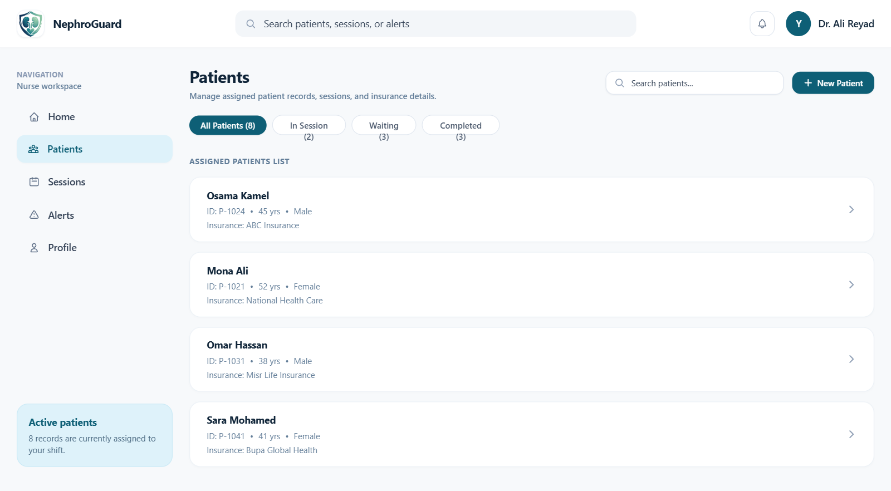
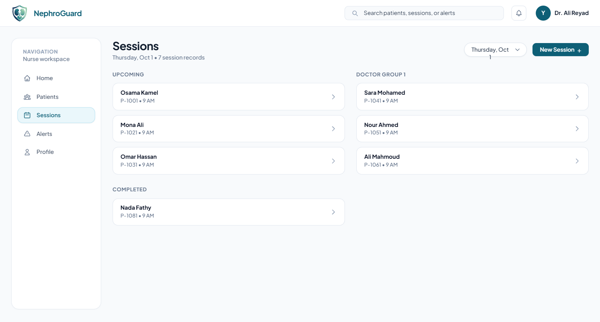

Records in different places
Patient histories, labs, and medications are harder to review when separated.
CONNECTED DIALYSIS CARE
Patient records, treatment sessions, and clinical support in one place.
Manage patients, treatment sessions, medications, and clinical insights in one place
Dialysis care connects regular treatment with continuous attention.
When records and routines are disconnected, important details become harder to bring together.
Patient histories, labs, and medications are harder to review when separated.
Vitals and treatment progress need accurate, timely documentation.
Safer prescription review starts with each patient’s kidney function.
Care teams need relevant patient context at the right moment.
One connected platform
From the patient record to the treatment floor.
Patient profiles, medical histories, labs, and treatments in one organized record.
Learn moreTrack sessions, document vital signs, and record treatment progress.
Learn moreOrganize medication records and support thoughtful prescription review.
Learn moreSummarize patient history and find relevant details with AI assistance.
Learn moreA better view of the work
Purpose-built tools for the moments that matter in dialysis care.
See assigned patients and quickly review their details, insurance, and current status.

View upcoming and completed treatments with assigned patients, care groups, and scheduled times.

Review prescriptions alongside kidney function; suggested adjustments are for doctors to assess.
Review with clinical context
Consider kidney function when reviewing prescriptions. Suggested adjustments are for doctors to assess.
Summarize patient records and surface relevant details in plain language.
Designed for the care team
Organized information and thoughtful support, built around how dialysis teams work.
Doctors, nurses, and administrators have the tools relevant to their work.
Keep patient history, prescriptions, labs, and treatment records together.
Insights and summaries assist clinicians; clinical decisions stay with professionals.
Your questions, answered
For dialysis units, including doctors, nurses, and administrators.
Review assigned patients, medical histories, labs, reports, and prescriptions.
Manage sessions, record vitals, calculate early warning scores, and report incidents.
Summarize patient histories, answer questions about records, and support medication review.
No. It supports care teams; qualified healthcare professionals make clinical decisions.
Yes. Role-based access provides relevant dashboards and tools for each role.
Yes. The platform supports Arabic and English, with right-to-left and left-to-right layouts.
Yes. Reports can be viewed and exported as PDFs.
Care, connected
Bring patients, sessions, medication, and clinical support into one clear workflow.